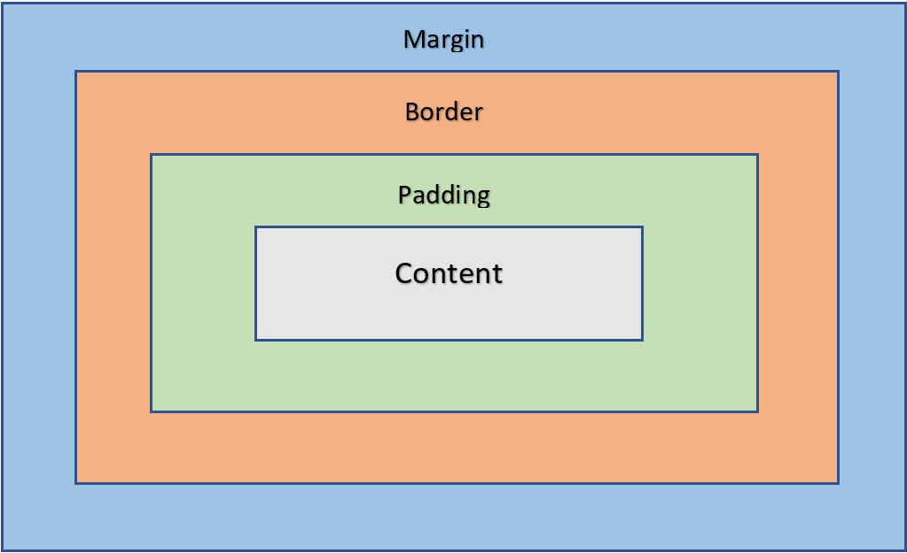
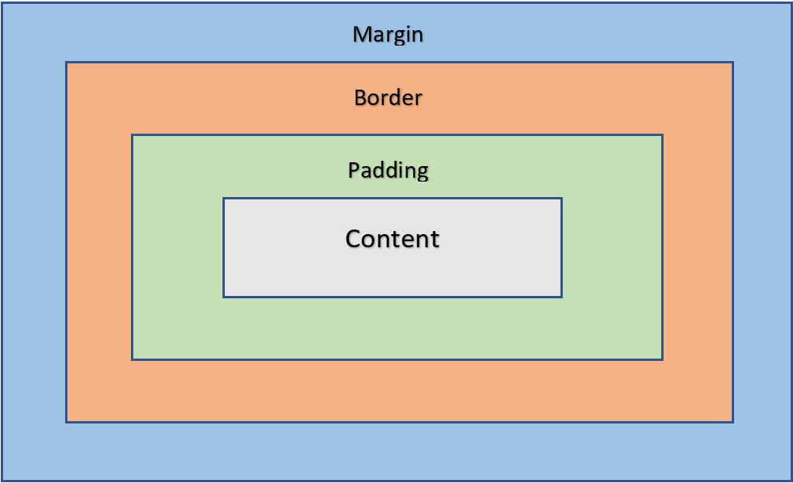

COLORES
| Funciones | ¿Que hace? | Enlace |
|---|---|---|
| CSS | Es el lenguaje de estilos utilizado para describir la presentación de documentos HTML | Documentacion |
| RGB | Funcion de colores que usan los valores rojo, verde y azul | Documentacion |
| rgba | Igual al rgb, solo que tambien representa el valor de la transparencia con la "a" | Documentacion |
| hsl | Representa el color dependiendo a su matriz, saturacion y brillo | Documentacion |
| hsla | Igual al hsl, solo que tambien representa el valor de la transparencia con la "a" | Documentacion |
SELECTORES
Selector UNIVERSAL *
Selector de TIPO
Selector de CLASE
Selector de ID

Selector de ATRIBUTOS
MODELO DE CAJAS

Selector de CLASE
Selector de ID
Selector de ATRIBUTOS
MODELO DE CAJAS
